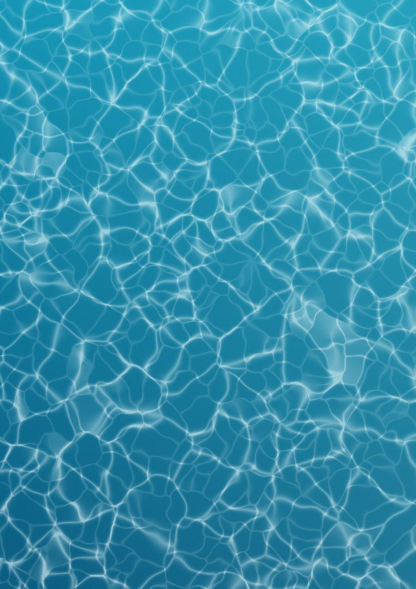
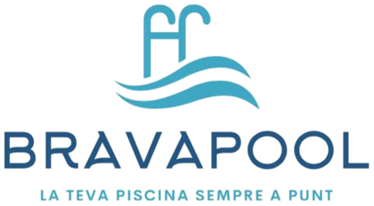
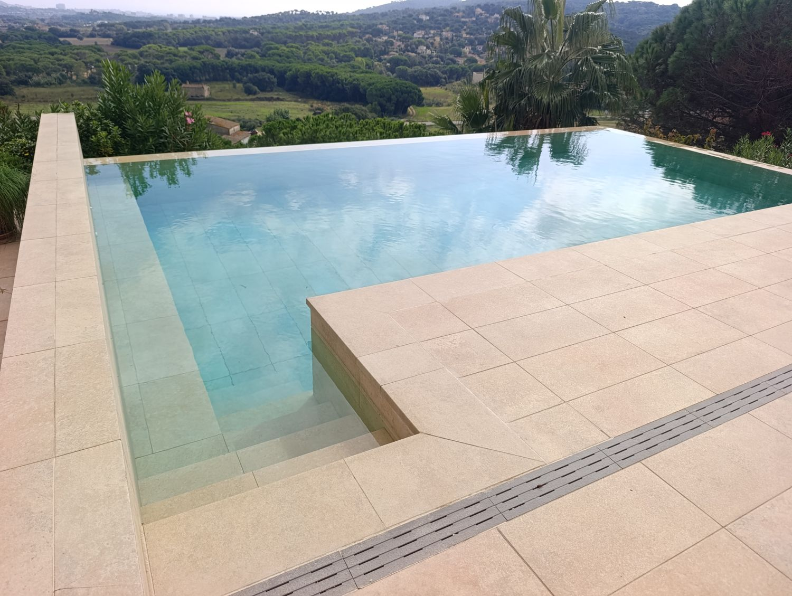
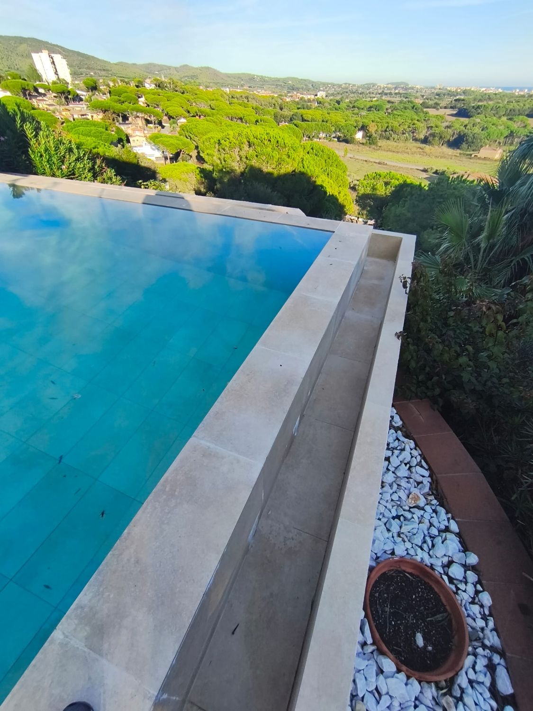
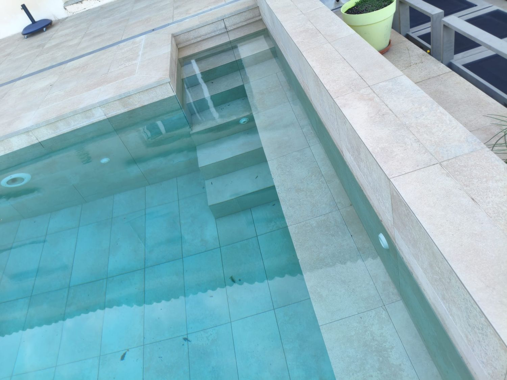
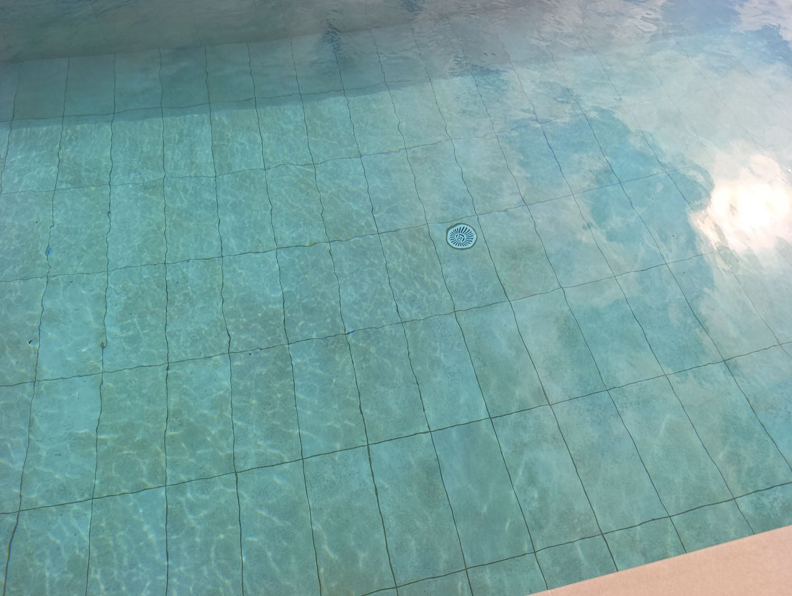

Desmontaje, impermeabilización y nueva cerámica,
con control de calidad en cada fase.

Estimado/a cliente:
Le presentamos nuestra propuesta para la rehabilitación integral de su piscina desbordante en C/ Anoia, 14 · 17251 Calonge (Girona). Este documento recoge, por escrito y con claridad, la obra: los trabajos, los materiales, los plazos, la forma de pago y las garantías.
La piscina pierde agua. Para resolverlo desde el origen retiraremos toda la cerámica, la coronación y la impermeabilización antiguas, saneamos el soporte e impermeabilizamos el vaso y el canal desbordante con el sistema DryPool de Grupo Puma, un mortero bicomponente semiflexible pensado para soportar la presión del agua. Después colocamos cerámica nueva Rosa Gres de 30 × 60 cm, piezas de peldaño antideslizantes en los bancos y la escalera, y una coronación nueva con el labio del desbordante perfectamente nivelado.
Cada fase se revisa antes de empezar la siguiente y le entregamos la obra terminada.
Quedamos a su disposición para resolver cualquier duda o ajustar la propuesta a lo que necesite.
Bilal
Brava Pool
| Dimensiones interiores | 7,50 × 4,00 m |
| Superficie de lámina | 30 m² |
| Profundidad | 1,70 m constante |
| Volumen máximo aprox. | 51 m³ |
| Tipo | Desbordante con canal en L |
| Canal desbordante | 12,5 ml · paredes de 80 cm |
| Bancos y escalera | 2 bancos (7,50 y 4,00 m) · 6 peldaños |
| Revestimiento | Rosa Gres 30 × 60 cm · ≈ 105 m² |
| Impermeabilización | Sistema DryPool · Grupo Puma |
| Coronación | Nueva · ≈ 37 ml |
| Plazo estimado | 5 a 6 semanas desde el inicio de obra, a confirmar tras la inspección inicial |
Fotografías de la piscina antes de la obra. Sirven de referencia para el replanteo y para comprobar, al terminar, que se respeta su geometría y su aspecto.




Fotografías del cliente tomadas antes de la intervención. Su estado real (fisuras, filtraciones, desprendimientos) se determina en la inspección técnica inicial.
Distribución de la piscina de 7,50 × 4 m y situación de los elementos principales.
| Vaso | 7,50 × 4,00 m · 1,70 m de profundidad |
| Bancos | 2 (7,50 m y 4,00 m) |
| Escalera | 1 · 6 peldaños |
| Canal desbordante | En L · 12,5 ml · paredes de 80 cm |
Plano orientativo, sin escala. Las medidas y la posición definitiva de cada elemento se confirman con el cliente en el replanteo.
La estanqueidad de una piscina depende del conjunto de capas, no de un solo producto. Este es el sistema previsto y su orden de ejecución.
| Elemento | Marca | Detalle |
|---|---|---|
| Impermeabilización | Grupo Puma | Sistema DryPool · mortero bicomponente semiflexible y malla antialcalina |
| Revestimiento | Rosa Gres | Porcelánico 30 × 60 cm apto para inmersión (modelo y color a confirmar) |
| Bancos y escalera | Rosa Gres | Pieza de peldaño antideslizante (referencia a confirmar) |
| Cemento cola | Por definir | Adhesivo cementoso C2 TE S1, apto para inmersión permanente |
| Rejuntado | Por definir | Mortero de juntas para inmersión permanente (tipo y color a confirmar) |
| Coronación | Por definir | Modelo y acabado a confirmar por escrito |
| Cloración salina (regalo) | Bright Blue | Pluma WP 15 con regulador de pH automático Sanus NG |
Los productos se aplican según las fichas técnicas vigentes de cada fabricante. Cualquier cambio de referencia se comunica al cliente por escrito antes del pedido.
Plazo total estimado: 5 a 6 semanas desde el inicio de obra, a confirmar tras la inspección inicial. Cada fase se verifica antes de empezar la siguiente.
| Fase | S1S2S3S4S5S6 |
|---|---|
| Fase 1 · Inspección, referencias y vaciado | |
| Fase 2 · Demoliciones | |
| Fase 3 · Reparación y preparación del soporte | |
| Fase 4 · Impermeabilización DryPool y curado | |
| Fase 5 · Revestimiento cerámico | |
| Fase 6 · Coronación y labio de rebose | |
| Fase 7 · Rejuntado | |
| Fase 8 · Entrega | |
| Pagos | 20 %30 %30 %20 % |
Tiempo de curado del mortero según ficha técnica del fabricante. Planificación orientativa: puede variar según el tipo de terreno, la meteorología y la entrega de materiales; cualquier cambio se comunicará con antelación.
| Pago | Hito | Importe con IVA |
|---|---|---|
| 20 % | A la aceptación del presupuesto (reserva de obra y pedido de materiales) | 5.463,88 € |
| 30 % | Al terminar la Fase 3, antes de impermeabilizar | 8.195,81 € |
| 30 % | Al terminar la Fase 4, antes de colocar la cerámica | 8.195,81 € |
| 20 % | Retención final: a la entrega de la obra terminada | 5.463,88 € |
Forma de pago: transferencia bancaria a nombre de Brava Pool.
| Nº | Descripción | Cant. | Ud. | Precio | Importe |
|---|---|---|---|---|---|
| 01FASE 1 · INSPECCIÓN, REFERENCIAS Y VACIADO | 506,19 € | ||||
| 1.1 | Inspección inicial y estado previo
| 1 | PA | 149,37 € | 149,37 € |
| 1.2 | Toma de referencia de la línea de flotación
| 1 | PA | 182,05 € | 182,05 € |
| 1.3 | Vaciado y protección de la zona de obra
| 1 | PA | 174,77 € | 174,77 € |
| 02FASE 2 · DEMOLICIONES | 2.930,73 € | ||||
| 2.1 | Desmontaje de la coronación
| 37 | ml | 14,64 € | 541,68 € |
| 2.2 | Desmontaje de la cerámica
| 105 | m² | 8,51 € | 893,55 € |
| 2.3 | Eliminación de la impermeabilización antigua
| 105 | m² | 7,10 € | 745,50 € |
| 2.4 | Retirada de escombros
| 1 | PA | 750,00 € | 750,00 € |
| Nº | Descripción | Cant. | Ud. | Precio | Importe |
|---|---|---|---|---|---|
| 03FASE 3 · REPARACIÓN Y PREPARACIÓN DEL SOPORTE | 1.716,46 € | ||||
| 3.1 | Saneado y lijado del vaso y del canal
| 1 | PA | 644,81 € | 644,81 € |
| 3.2 | Revisión de pasamuros y puntos singulares
| 1 | PA | 424,09 € | 424,09 € |
| 3.3 | Pendiente del fondo del canal
| 12,5 | ml | 23,00 € | 287,50 € |
| 3.4 | Replanteo de la línea de flotación y del muro de rebose
| 1 | PA | 360,06 € | 360,06 € |
| 04FASE 4 · IMPERMEABILIZACIÓN · SISTEMA DRYPOOL DE GRUPO PUMA | 3.190,95 € | ||||
| 4.1 | Suministro y aplicación del sistema DryPool en solera y paredes del vaso
| 69 | m² | 30,39 € | 2.096,91 € |
| 4.2 | Suministro y aplicación del sistema DryPool en el canal desbordante
| 27 | m² | 30,39 € | 820,53 € |
| 4.3 | Suministro y aplicación del sistema DryPool en bancos y escalera
| 9 | m² | 30,39 € | 273,51 € |
| Nº | Descripción | Cant. | Ud. | Precio | Importe |
|---|---|---|---|---|---|
| 05FASE 5 · REVESTIMIENTO CERÁMICO ROSA GRES | 9.904,65 € | ||||
| 5.1 | Suministro y colocación de cerámica Rosa Gres 30 × 60 cm en solera y paredes del vaso
| 69 | m² | 69,20 € | 4.774,80 € |
| 5.2 | Suministro y colocación de cerámica Rosa Gres 30 × 60 cm en el canal desbordante
| 27 | m² | 69,20 € | 1.868,40 € |
| 5.3 | Suministro y colocación de cerámica Rosa Gres 30 × 60 cm en bancos y escalera
| 9 | m² | 69,20 € | 622,80 € |
| 5.4 | Suministro y colocación de piezas de peldaño Rosa Gres
| 35 | ud | 75,39 € | 2.638,65 € |
| 06FASE 6 · CORONACIÓN Y LABIO DE REBOSE | 3.376,11 € | ||||
| 6.1 | Suministro y colocación nivelada de coronación y piezas de rebose
| 37 | ml | 87,31 € | 3.230,47 € |
| 6.2 | Prueba de lámina de agua
| 1 | PA | 145,64 € | 145,64 € |
| Nº | Descripción | Cant. | Ud. | Precio | Importe |
|---|---|---|---|---|---|
| 07FASE 7 · REJUNTADO Y SELLADOS | 823,06 € | ||||
| 7.1 | Suministro y aplicación de rejuntado de cerámica, peldaños y coronación
| 105 | m² | 6,67 € | 700,35 € |
| 7.2 | Juntas de dilatación y sellados elásticos perimetrales
| 1 | PA | 122,71 € | 122,71 € |
| 08FASE 8 · ENTREGA | 129,85 € | ||||
| 8.1 | Limpieza final de obra
| 1 | PA | 85,14 € | 85,14 € |
| 8.2 | Revisión final y entrega de la obra
| 1 | PA | 44,71 € | 44,71 € |
| +PROMOCIÓN | |||||
| R.1 | Regalo promocional: cloración salina y pH automático
| 1 | ud | — | REGALO |
PA = partida alzada. Las mediciones son estimadas y se ajustan con las medidas tomadas en obra. El precio total es cerrado e incluye materiales y mano de obra. El reparto por partidas es orientativo.
Precio cerrado con todos los materiales, la mano de obra, el transporte y la retirada de escombros incluidos.
| Cap. | Concepto | Importe |
|---|---|---|
| 01 | Fase 1 · Inspección, referencias y vaciado | 506,19 € |
| 02 | Fase 2 · Demoliciones | 2.930,73 € |
| 03 | Fase 3 · Reparación y preparación del soporte | 1.716,46 € |
| 04 | Fase 4 · Impermeabilización · sistema DryPool de Grupo Puma | 3.190,95 € |
| 05 | Fase 5 · Revestimiento cerámico Rosa Gres | 9.904,65 € |
| 06 | Fase 6 · Coronación y labio de rebose | 3.376,11 € |
| 07 | Fase 7 · Rejuntado y sellados | 823,06 € |
| 08 | Fase 8 · Entrega | 129,85 € |
| + | Regalo promocional: cloración salina y pH automático | Regalo |
| Base imponible | 22.578,00 € | |
| IVA 21 % | 4.741,38 € | |
| Total presupuesto (IVA incl.) | 27.319,38 € | |
Precio total cerrado. El reparto entre fases y partidas es orientativo y no modifica el total.
El tipo de IVA aplicable depende de las condiciones de la vivienda y de la obra; se confirma al cerrar el presupuesto.
Al tratarse de una reforma, Brava Pool garantiza el nuevo revestimiento durante 3 años y todos los trabajos realizados y la mano de obra durante 2 años. Estas garantías comerciales se suman a las garantías legales que correspondan según la normativa vigente.
El servicio técnico y las reparaciones en garantía se atienden durante todo el año, sin limitación de temporada. Ante cualquier incidencia comunicada por teléfono, WhatsApp o correo electrónico, respondemos por escrito en un plazo máximo de 48 horas.
Revisamos y fotografiamos el soporte tras la demolición, la continuidad de la impermeabilización y los puntos singulares, la colocación y el rejuntado de la cerámica. Antes de la entrega hacemos una revisión final de acabados con el cliente.
El precio incluye la retirada de todos los escombros de la obra, su transporte y su depósito en un punto limpio autorizado.
Durante la obra protegemos las zonas de paso y el jardín, y al terminar retiramos todos los restos de material para entregar la piscina y su entorno limpios.
Los pagos se vinculan al avance de la obra: el primero reserva la obra y el pedido de materiales y los siguientes se abonan al terminar cada hito indicado. El último 20 % queda retenido hasta la entrega de la obra terminada.
El cliente declara conocer y aceptar el presente presupuesto n.º 127, por un importe total de 27.319,38 € IVA incluido, sus condiciones y la forma de pago indicada.